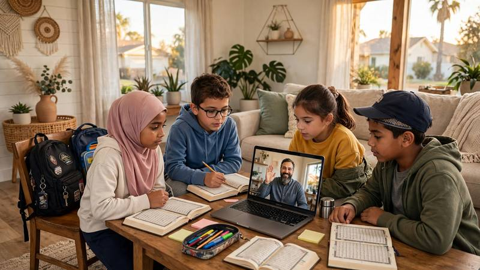

After-School Quran Classes for Kids in USA

Finding time for Quran learning alongside school, homework and family activities can be challenging for parents in the United States. After-school Quran classes for kids in the USA provide a way for children to study the Quran online while maintaining their regular school routine.
With online lessons, families can explore suitable class times without travelling to a learning center. Children can work on Quran reading, pronunciation, Tajweed and foundational Islamic knowledge according to their current level.
Contact Al Shimaa Quran Academy to discuss your child's age, current Quran level and preferred schedule.
Ask About a Free Trial →Why Choose After-School Quran Classes?
A consistent learning routine can help children make progress without making their daily schedule feel overwhelming. After-school lessons may work well for families who prefer to complete Quran study before the evening becomes busy.
- A regular routine: Families can plan Quran lessons around school, meals and homework.
- Learning from home: Children can attend online lessons without travelling to a classroom.
- Individual attention: One-to-one lessons, when selected and available, allow a teacher to focus on the child's needs.
- Progress at the child's level: Beginners can start with Arabic letters, while more experienced students can develop their Quran reading.
- Flexible planning: Parents can ask about available lesson times that fit their local time zone.
Choosing the Right Class Time in the USA
The best lesson time depends on your child's school hours, homework, age and energy level. Some children learn comfortably soon after school, while others benefit from a snack and a short break first.
The United States has several time zones, including Eastern, Central, Mountain and Pacific. A time offered in one region will not be the same local time in another. Daylight saving time can also affect time differences during the year.
When contacting the academy, provide your city or time zone and preferred days. Confirm the available lesson times directly rather than relying on a general example schedule.
How to Build a Manageable After-School Routine
- Allow your child time to relax and have a snack after school.
- Choose a lesson time that does not regularly conflict with homework or bedtime.
- Prepare the Quran, learning materials and a quiet study space in advance.
- Set aside a few minutes for revision between lessons when appropriate.
- Review your child's progress with the teacher and adjust the routine if needed.
What Do Children Learn in Online Quran Classes?
The learning plan should match each child's age, reading ability and previous experience. Depending on the selected course, children may study the following subjects.
1. Noorani Qaida for Beginners
Children who are starting from the beginning can learn Arabic letters, letter sounds, vowel marks and basic reading combinations. The aim is to build a foundation before progressing to Quran reading.
Learn more about our Noorani Qaida course.
2. Quran Reading and Tajweed
Students who can already recognize Arabic letters can work on reading Quranic words and verses more accurately. Lessons may include pronunciation practice and age-appropriate Tajweed instruction.
Explore our Tajweed course to learn more about Quran recitation instruction.
3. Short Surahs and Memorization
Depending on the child's level and goals, lessons may include memorizing short surahs, reviewing previously memorized passages and developing a consistent revision routine.
Parents can also explore our guide to Quran memorization for kids.
4. Islamic Manners and Basic Knowledge
Children may also benefit from age-appropriate lessons about Islamic manners, daily duas and basic Islamic concepts. The content should be suitable for the child's age and learning goals.
For additional guidance, read our beginner's guide to Islamic Studies.
Are Online Quran Classes Suitable for Different Ages?
Children develop reading and attention skills at different rates, so the most suitable lesson format depends on the individual student rather than age alone.
- Young beginners: Short, structured activities can help introduce Arabic letters and sounds.
- Elementary-school children: Lessons can combine reading practice, repetition and short learning goals.
- Older children and teenagers: Students may focus on fluent reading, Tajweed, memorization or correcting specific reading difficulties.
Parents should discuss the child's current ability with the academy before selecting a course. For more guidance, read how to choose an online Quran teacher for your child.
How Long Should Each Lesson Be?
There is no single lesson length that suits every child. Younger learners may benefit from shorter sessions, while older students or those with more experience may be comfortable with longer lessons.
Ask about the available lesson durations and choose an option that allows your child to stay engaged without becoming tired. Consistent, manageable practice is often more useful than a schedule that is difficult to maintain.
How Can Parents Support Quran Learning at Home?
- Keep the lesson time as consistent as your family schedule allows.
- Provide a quiet place with a reliable internet connection.
- Encourage practice without putting unnecessary pressure on your child.
- Celebrate effort and gradual improvement, not only memorization milestones.
- Ask the teacher which reading or revision activities are appropriate between lessons.
- Communicate early if the lesson schedule becomes difficult to manage.
If you want more ideas for supporting your child, see our guide on teaching kids Quran at home and our tips for keeping children motivated during online Quran learning.
Frequently Asked Questions
Do you offer after-school Quran classes for children in California?
Families in California can ask about available lesson times that fit Pacific Time. Actual availability should be confirmed with the academy before booking.
Can children attend classes after school in New York or Texas?
Parents can provide their city or time zone and preferred days when contacting the academy. The available schedule should be confirmed for the family's local time.
Can a beginner join without knowing Arabic?
Children who are new to Arabic can ask about starting with Noorani Qaida or another suitable beginner-level option. The recommended starting point depends on the child's current skills.
Are classes one-to-one?
Ask the academy to confirm the available lesson format when registering. If you prefer individual instruction, mention that preference when discussing your child's learning plan.
How much do after-school Quran classes cost?
Fees depend on the selected course and lesson arrangement. Check the Quran academy pricing page for current published prices, and confirm any specific package before registering.
How can I arrange a trial lesson?
Visit the registration page to ask about a trial lesson and provide your child's age, current Quran level, time zone and preferred schedule.